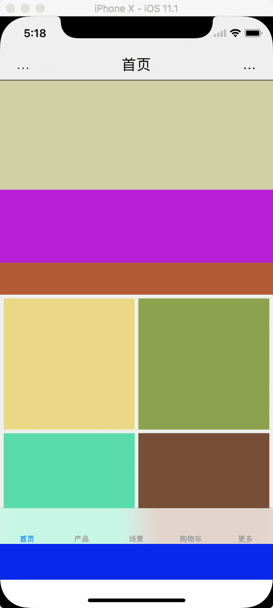

Easy 2 OC 主导航 MainTabBar
代码：
UIView {
name = MainTabBar;
edges = 0;
UITabBarController {
id = tabBarController;
top.left.right = 0;
bottom = -49;
x-bottom = -88;
//tabbar = hide;
tabBar {
class = IndexController;
title = "首页";
image = "xxx2.png";
}
tabBar {
class = ProductFilterController;
title = "产品";
image = "xxx3.png";
}
tabBar {
class = SceneListController;
title = "场景";
image = "xxx4.png";
}
tabBar {
class = ShoppingCartController;
baseOn = UINavigationController;
baseOnNavigationBar = hide;
title = "购物车";
image = "xxx4.png";
}
tabBar {
class = MoreController;
baseOn = UINavigationController;
title = "更多";
image = "xxx4.png";
}
}
UIView {
id = theFootView;
left.right.bottom = 0;
top = tabBarController.bottom;
UIView {
id = footView;
left.right.top = 0;
height = 49;
bgColor = #000ff0;
}
}
}
效果图： 
生成MainTabBarView.h
#import <UIKit/UIKit.h>
#import "QSKit.h"
@protocol MainTabBarViewDelegate;
@interface MainTabBarView : UIView
#pragma mark - 属性
@property (nonatomic, weak) UIView* theLoadView;
@property (nonatomic, strong) UITabBarController* tabBarController;
@property (nonatomic, weak) UIView* theFootView;
@property (nonatomic, weak) UIView* footView;
//自动创建的协议
@property (nonatomic, weak) id<MainTabBarViewDelegate> delegate;
#pragma mark - 方法
- (void) addToSuper: (id) aSuper;
//重写这个方法可以定义上面方法的布局样式，返回 YES 生效。
- (BOOL) addToSuperWithSetupLayoutFromSuperView:(UIView*)aSuperView;
@end
@protocol MainTabBarViewDelegate <NSObject>
//写上需要的协议方法：
@end
生成MainTabBarView.m
#import "MainTabBarView.h"
#import "Masonry.h"
@interface MainTabBarView ()
@end
@implementation MainTabBarView
#pragma mark - 内置的方法
- (void) addToSuper:(id)aSuper {
if ([aSuper isKindOfClass:[UIViewController class]]) {
UIViewController* tempController = aSuper;
[self addToSuper:[tempController view]];
return;
}
if ([aSuper isKindOfClass:[UIView class]]) {
UIView* tempView = aSuper;
[tempView addSubview:self];
if ([self addToSuperWithSetupLayoutFromSuperView:tempView] == NO) {
[self mas_remakeConstraints:^(MASConstraintMaker *make) {
make.edges.mas_equalTo(0);
}];
}
return;
}
}
- (BOOL) addToSuperWithSetupLayoutFromSuperView:(UIView*)aSuperView {
return NO;
}
#pragma mark - 初始的方法
- (instancetype) init {
if (self = [super init]) {
[self setupUI];
}
return self;
}
- (instancetype) initWithFrame:(CGRect)frame {
if (self = [super initWithFrame:frame]) {
[self setupUI];
}
return self;
}
#pragma mark - 配置界面的方法
- (void) setupUI {
if (self.theLoadView) {
return;
}
#pragma mark - UI - init - theLoadView
UIView* theLoadView = [UIView new];
[self addSubview:theLoadView];
[theLoadView mas_makeConstraints:^(MASConstraintMaker *make) {
make.edges.mas_equalTo(0);
}];
self.theLoadView = theLoadView;
#pragma mark - UI - init - tabBarController
UITabBarController* tabBarController = [UITabBarController new];
[theLoadView addSubview:tabBarController.view];
[tabBarController.view mas_makeConstraints:^(MASConstraintMaker *make) {
make.top.left.right.mas_equalTo(0);
if ([QSKit shared].iPhoneX) {
make.bottom.mas_equalTo(-88);
} else {;
make.bottom.mas_equalTo(-49);
}
}];
self.tabBarController = tabBarController;
#pragma mark - UI - init - theFootView
UIView* theFootView = [UIView new];
[theLoadView addSubview:theFootView];
[theFootView mas_makeConstraints:^(MASConstraintMaker *make) {
make.left.right.bottom.mas_equalTo(0);
make.top.mas_equalTo(tabBarController.view.mas_bottom);
}];
self.theFootView = theFootView;
#pragma mark - UI - init - footView
UIView* footView = [UIView new];
footView.backgroundColor = [QSKit color:@"#000ff0"];
[theFootView addSubview:footView];
[footView mas_makeConstraints:^(MASConstraintMaker *make) {
make.left.right.top.mas_equalTo(0);
make.height.mas_equalTo(49);
}];
self.footView = footView;
}
@end
生成MainTabBarController.h
#import <UIKit/UIKit.h>
@interface MainTabBarController : UIViewController
@end
生成MainTabBarController.m
#import "MainTabBarController.h"
#import "MainTabBarView.h"
@interface MainTabBarController ()<MainTabBarViewDelegate>
@property (nonatomic, weak) MainTabBarView* myView;
@end
@implementation MainTabBarController
#pragma mark - dealloc
- (void) dealloc {
}
#pragma mark - loadView
- (void) loadView {
[super loadView];
self.view.backgroundColor = [UIColor whiteColor];
MainTabBarView* myView = [MainTabBarView new];
myView.delegate = self;
[myView addToSuper:self];
self.myView = myView;
}
#pragma mark - viewDidLoad
- (void)viewDidLoad {
[super viewDidLoad];
// Do any additional setup after loading the view, typically from a nib.
NSMutableArray* viewControllerKeepArray = [NSMutableArray array];
{
UIViewController* viewController = [NSClassFromString(@"IndexController") new];
viewController.tabBarItem.title = @"首页";
viewController.tabBarItem.image = [QSKit image:@"xxx2.png"];
[viewControllerKeepArray addObject:viewController];
}
{
UIViewController* viewController = [NSClassFromString(@"ProductFilterController") new];
viewController.tabBarItem.title = @"产品";
viewController.tabBarItem.image = [QSKit image:@"xxx3.png"];
[viewControllerKeepArray addObject:viewController];
}
{
UIViewController* viewController = [NSClassFromString(@"SceneListController") new];
viewController.tabBarItem.title = @"场景";
viewController.tabBarItem.image = [QSKit image:@"xxx4.png"];
[viewControllerKeepArray addObject:viewController];
}
{
UIViewController* tempViewController = [NSClassFromString(@"ShoppingCartController") new];
UINavigationController* viewController = [[UINavigationController alloc] initWithRootViewController:tempViewController];
viewController.navigationBarHidden = YES;
viewController.navigationBar.hidden = YES;
viewController.tabBarItem.title = @"购物车";
viewController.tabBarItem.image = [QSKit image:@"xxx4.png"];
[viewControllerKeepArray addObject:viewController];
}
{
UIViewController* tempViewController = [NSClassFromString(@"MoreController") new];
UINavigationController* viewController = [[UINavigationController alloc] initWithRootViewController:tempViewController];
viewController.tabBarItem.title = @"更多";
viewController.tabBarItem.image = [QSKit image:@"xxx4.png"];
[viewControllerKeepArray addObject:viewController];
}
self.myView.tabBarController.viewControllers = viewControllerKeepArray;
}
#pragma mark - viewWillAppear
- (void) viewWillAppear:(BOOL)animated {
[super viewWillAppear:animated];
}
#pragma mark - viewDidAppear
- (void) viewDidAppear:(BOOL)animated {
[super viewDidAppear:animated];
}
#pragma mark - viewWillDisappear
- (void) viewWillDisappear:(BOOL)animated {
[super viewWillDisappear:animated];
}
#pragma mark - viewDidDisappear
- (void) viewDidDisappear:(BOOL)animated {
[super viewDidDisappear:animated];
}
#pragma mark - MainTabBarViewDelegate
#pragma mark - 是否隐藏状态栏
//- (BOOL) prefersStatusBarHidden {
// return YES;
//}
#pragma mark - 方向旋转
//- (BOOL) shouldAutorotate {
// return YES;
//}
//- (UIInterfaceOrientationMask) supportedInterfaceOrientations {
// return UIInterfaceOrientationMaskAll;
//}
@end